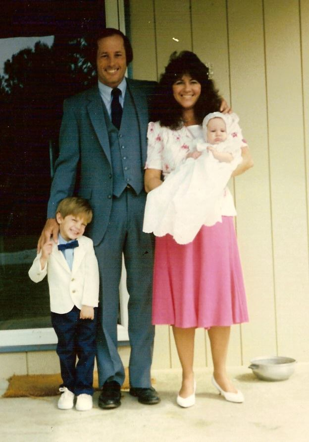

Before I start to teach you the fundamentals of how to make an art quilt, I want to remind you that I have always and will always be MOM to you, but that I have had lots of other roles in my life as NAIDA, which contribute to understanding why I love art quilting, as well as how I do it.
I like to use a lot of symbolism in my artwork because I see meaning in everything. I believe that the river of life flows through and connects each of us to each other as we move through our time in history. Since art quilts take many hours, I use that time to reflect on life, while paying close attention to those sharp scissors in my hand!
Although my formal art education ended when I got married to your father after a very brief study of graphic design at the University of Florida in 1968, every one of my jobs after that required some degree of artistic creativity. My work experiences include time as a bookkeeper, real estate broker, graphic designer, advertising agency owner, architectural designer and draftsman, marketing consultant, image and branding designer, promotional director, interior decorator and, oh yeah, Mom (teacher, chauffeur, softball coach, cook, maid and laundress.)
We bought you your first computer in second grade, and I know that you can't imagine that most of my artistic career was spent at an actual wooden drawing board where "cut and paste" had a sensory meaning. Feeling the smoothness of the vellum paper beneath my drafting pencil on my wooden drawing board, feeling the exacto blade between my fingers and smelling the rubber cement...I always loved that sensory experience. So I never used a computer in my design career, preferring to use my hands at the drawing board.
Sewing was always a part of my life, but I was never interested in quilting with little squares. Aunt Jane gave me a miniature Singer Featherweight sewing machine when I was in 9th grade, and I still have it and love using it for straight sewing. But what I love now is Art Quilting, and you gave it a perfect name -- quilting beyond the squares! It's very fitting that I learned this process using a picture of you at Angel Falls as my design inspiration.
So Art Quilting is my form of artistic expression and I have lots of new tools. My engineering scale has been replaced with a plastic quilter's rule, a rotary cutter replaces my exacto blade, and fusing fabric replaces rubber cement! Fabrics offer me something other art mediums do not. After designing my initial pattern, I move my way around my palette of colorful fabrics, then cut, blend and fuse them together on my "canvas" of cotton batting sandwiched between two pieces of unbleached muslin fabric. Piece by piece, sometimes itty bitty pieces, the design takes shape.
Finishing my creation is accomplished with my "paintbrush" --- the multi-colored threads on my quilting machine (which is about five times bigger than that Singer Featherweight!) where free-motion quilting adds a unique perspective and dimension. I like to think of my medium as painting with fabric, with raw-edge applique as my technique. I find this medium best suited to me because of the hands-on approach in combining the tactile sensation of touch with the visual expression of colors. New fabrics even test the sense of smell.
So now I am depending on you to teach me to use technology to bring me into your brave new world as I teach you how to take your hands off the keyboard and feel the fabric! I look forward to our continued adventure together on this river of life, and promise that I will keep reaching higher as I keep getting older.